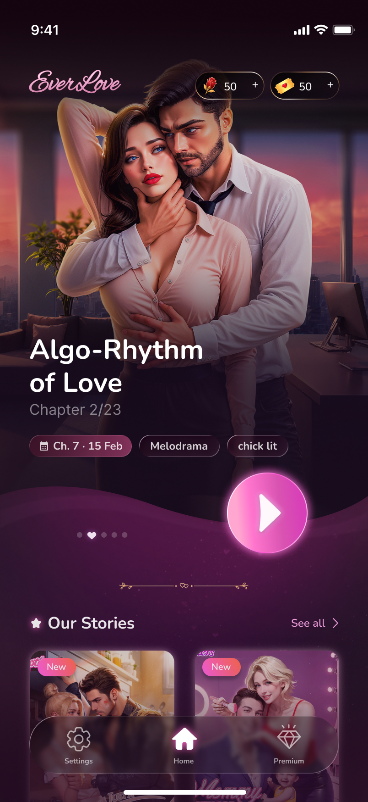
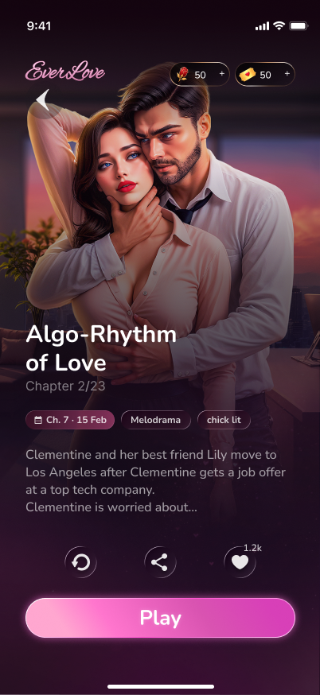
Designing a romance you can hold in your hands.
EverLove targets the gap in the interactive fiction market: Episode and Choices dominate with casual entertainment, but there's an underserved audience of girls 14+ who want psychological depth — moral complexity, characters with real flaws, stories that feel closer to fiction than to a dopamine loop. One indie developer. One designer.
Before any colour or typography, I mapped the full navigation logic, key screens and repeat states. Wireframes defined the skeleton that the visual system grew around.
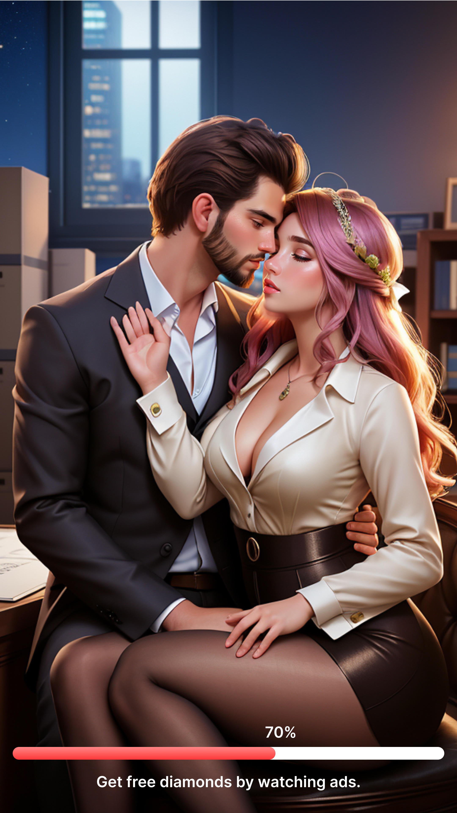
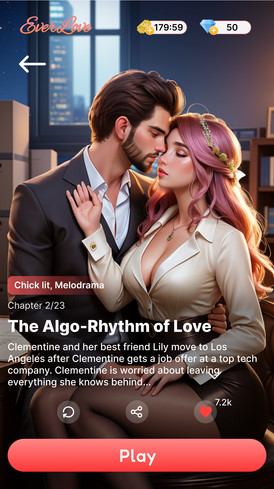
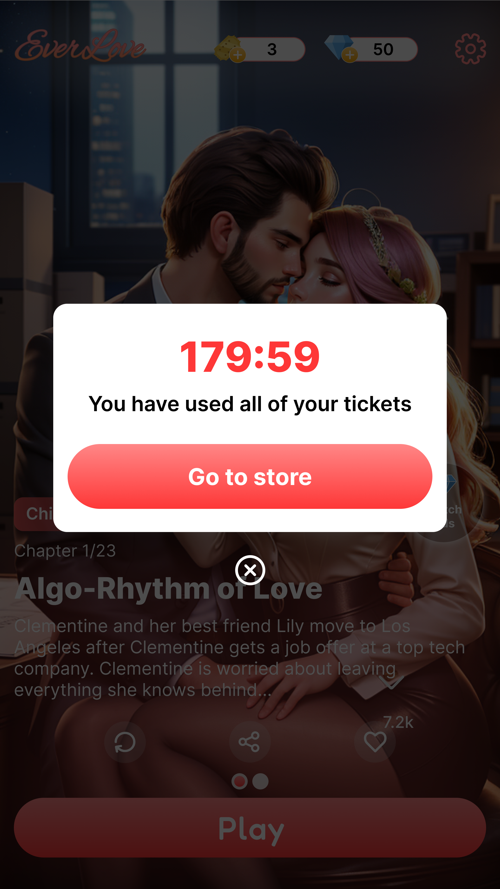
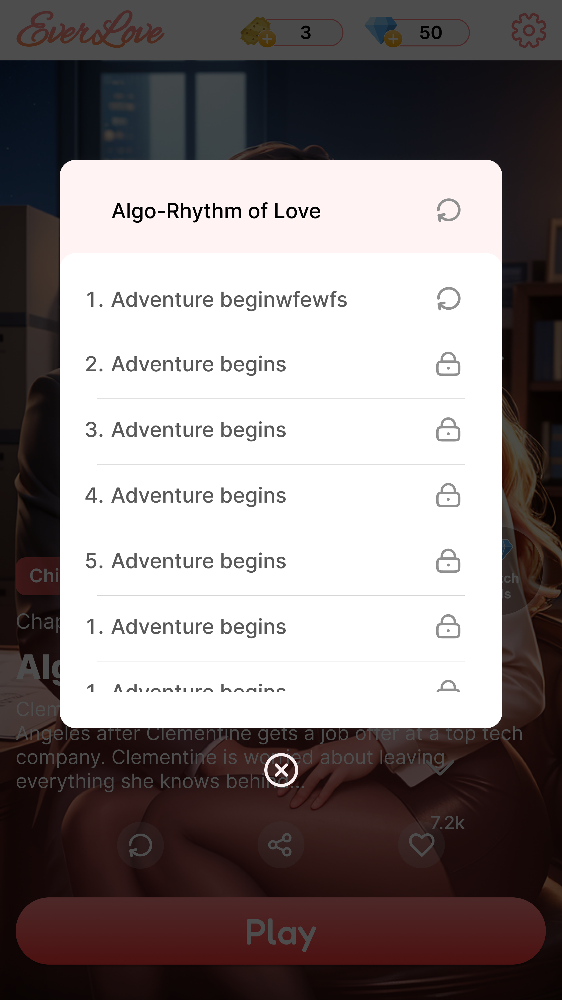
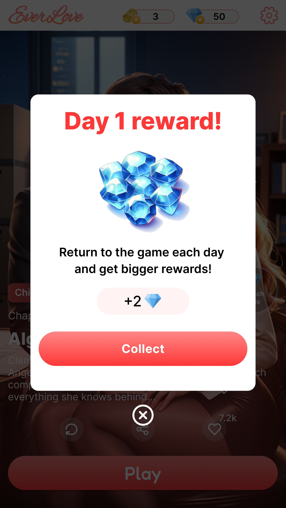
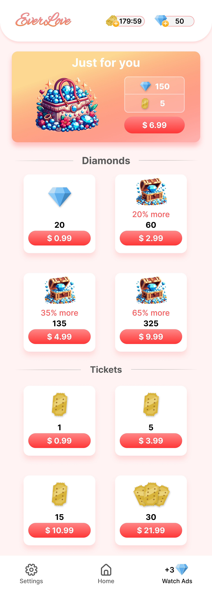
Competitor teardown across 4 apps, monetization audit, and App Store review synthesis. Four insights shaped every design decision.
Four competitor apps installed and played for 2+ weeks. App Store reviews filtered by 3–4 stars — where honest feedback lives — and grouped into recurring themes. Monetization flows screenshotted and mapped side by side.
| Product | Currencies | Monetization | UI vibe | Customization | Reading UX |
|---|---|---|---|---|---|
| Choices | 1 currency Diamonds |
Hard gate per choice (16–30 💎) | Light, pastel, functional | Outfit unlocks per scene | Interrupted at every branch |
| Episode | 2 currencies Gems + Passes |
Time gate + hard gate combined | Light, YA-oriented, busy | Deep character creator | Passes consumed per episode |
| Chapters | 2 currencies Tickets + Diamonds |
Time gate + purchase gate | Dark, cinematic, strong art | Minimal in-story choices | Full-bleed, good immersion |
| Romance Club | 2 currencies Stars + Diamonds |
Soft earn + hard buy mix | Rich dark, editorial — closest | Wardrobe system per story | Immersive, best in class |
| EverLove ✦ | 2 currencies Roses · Tickets |
Soft nudge — invitation, not gate | Dark atmospheric, editorial | Mid-story picker, live preview | Full-bleed, quiet chrome |
Decision moments — not the art — were what people screenshotted and shared. Choices needed real visual weight.
Outfit customization drove emotional investment — it deserved a dedicated, tactile flow.
Even two currencies can confuse — each needed a completely different visual shape and a single clear job so players never spend the wrong one by mistake.
Daily rewards and clear upsells outperformed hard gates. Soft nudges ("you're missing roses") felt fair, not punitive.
Typography, colour rules, and a component library — so new chapters and screens could ship without reinventing the look. Two currencies with distinct visual identities: roses for premium choices, tickets for chapter access.
Full-bleed art sets each scene. The primary action — Play — glows magenta. Currency and navigation stay at the edges, invisible until needed. Dialogue choices have real visual weight so every decision feels meaningful.
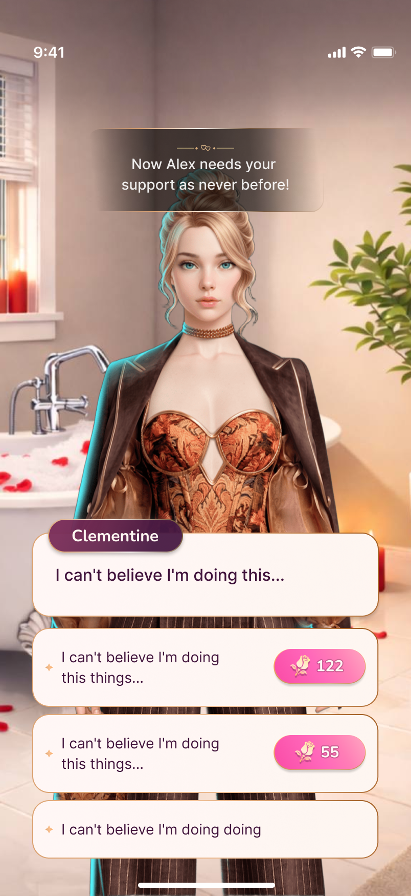
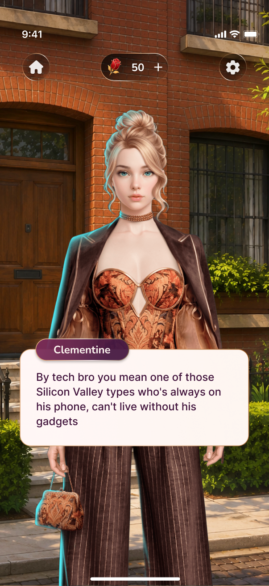
The home surface leads with the player's current story and a one-tap resume, then unfolds into discovery: featured arcs, new chapters, and the daily reward that brings readers back. Currency lives top-right — always one tap from the shop.
The most complex flow in the product: triggered mid-story, it must feel immersive — not like leaving the game. A horizontal picker lets players browse looks against the live scene. Every decision point is handled: confirmation, insufficient roses, upsell, and return to story.
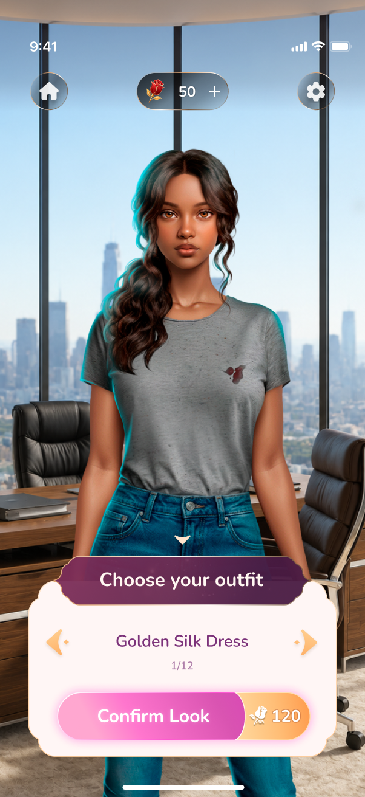
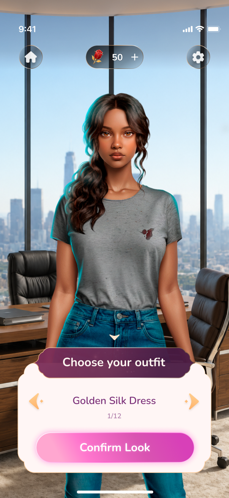
At a pivotal scene, the game prompts wardrobe selection. The overlay slides up without leaving the story screen.
Looks preview on the actual illustration, not a doll. Scroll left/right to compare options.
Honest pricing: the cost is on the action itself, not buried in fine print.
"You are missing roses" — not an error, an invitation. Routes to the shop with the exact deficit shown, then returns to the same moment in the story.
The outfit appears on the heroine, the chapter resumes. No friction, no dead ends.
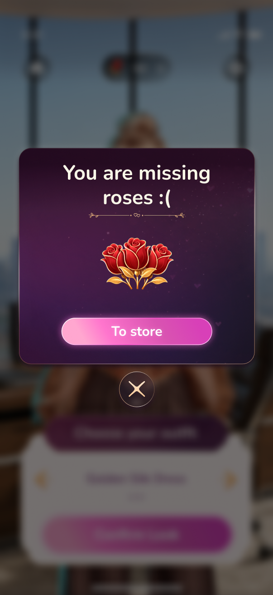
The "missing roses" screen is an opportunity, not an error message. Copy is warm ("you're just a few roses away"), the CTA routes to the specific bundle the player needs — and returns them to the exact scene after purchase.
Two currencies with clear roles. The shop surface is warm and personalized: "just for you" bundles, soft badge discounts, a purchase success state that celebrates and returns the player to the story immediately.
The choice currency. Spent on premium story branches and outfits — the heart of every decision moment.
Chapter access. Earned through play or topped up — the steady pulse that keeps stories moving.
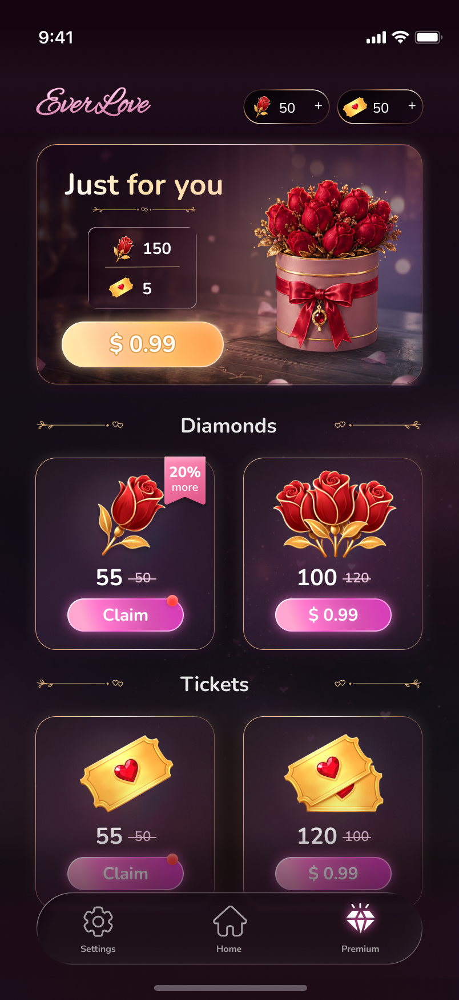
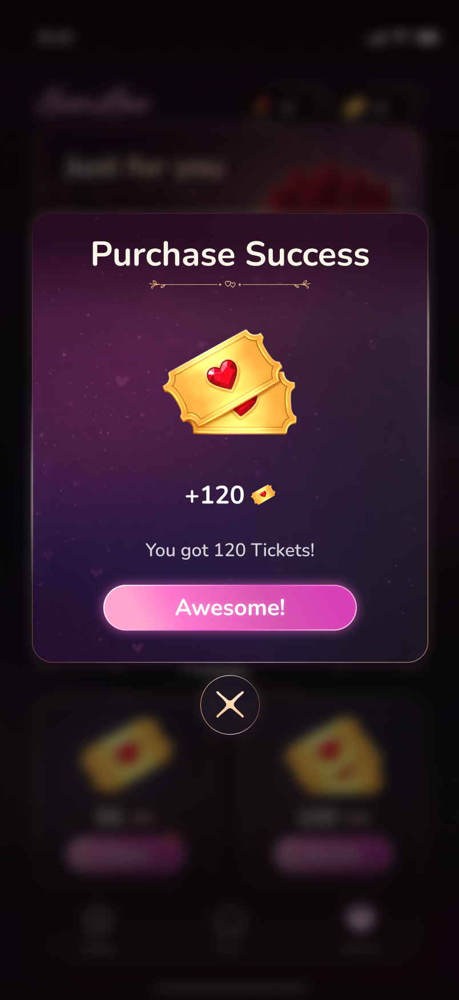
Back confirmations, restart prompts, the no-tickets warning — I spent as much time on these as on the hero moments. When a modal looks like part of the game, the player barely notices it. That was the goal.
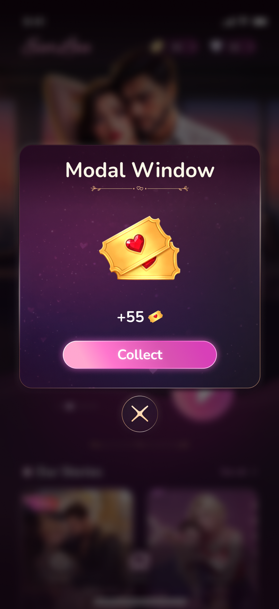
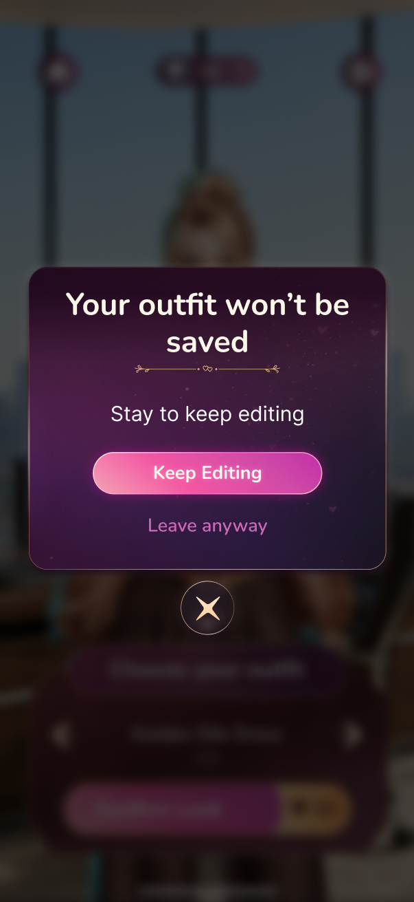
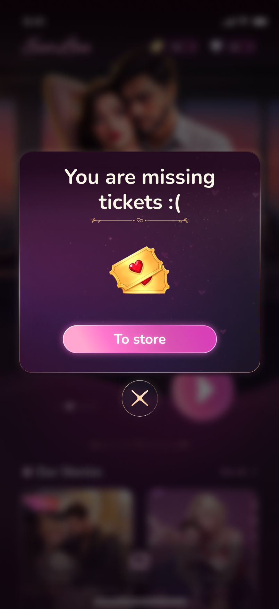
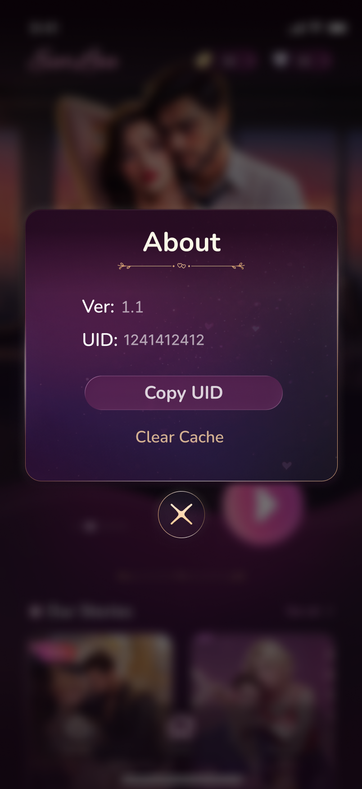
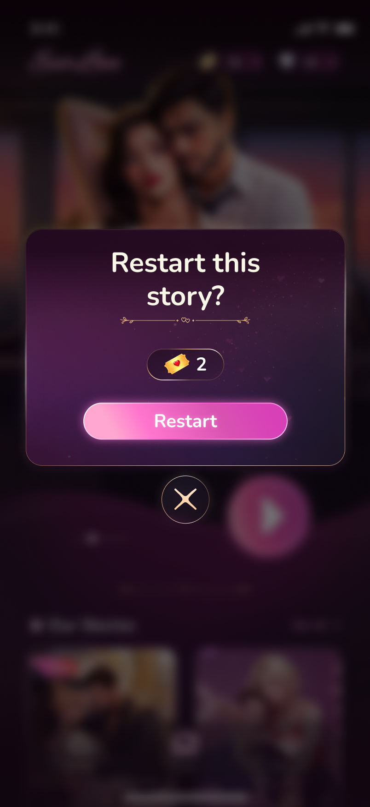
When there's no one to validate design choices, all responsibility sits with you. Learned to trust my own solutions and articulate the reasoning behind each one — which made handoff conversations with developers much sharper.
The biggest unlock: designing soft upsells as part of the story language, not as interrupts. When "you're missing roses" reads like a romantic invitation rather than an error, players engage rather than bounce.
Building the component library — buttons, modals, tab bar, cards — before designing individual screens felt slow at first. But when the outfit picker needed a new state we hadn't planned, it took a morning, not a week. The pieces were already there.
Animated scene transitions between chapters, a chapter recap screen for players returning after a break, and a clearer currency introduction for first-time players — shown through context, not a tutorial.